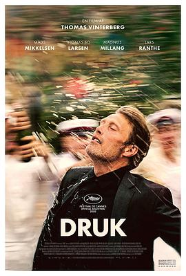

酒精计划 / Druk
又名：醉美的一课(港) / 醉好的时光(台) / 酩酊烂醉 / 另一回合 / The Alcohol Project / Another Round / Drunk
关联到了民族一代人的迷茫和困境，男主的困境引起共鸣
作品信息
| 导演 | 托马斯·温特伯格 |
| 编剧 | 托马斯·温特伯格 / 托比亚斯·林道赫姆 |
| 主演 | 麦斯·米科尔森 / 托玛斯·博·拉森 / 马格努斯·米兰 / 拉斯·兰特 / 玛丽亚·邦妮薇 / 海伦娜·赖因科德·纳曼 / 苏西·沃德 / 艾伯特·鲁德贝克·林哈特 / 弗莱德瑞克·温瑟·拉斯穆森 / 多尔特·回斯特德 / 莫滕·桑博 / 奥勒·杜邦 / 比尔·克林顿 / 列昂尼德·伊里奇·勃列日涅夫 / 让-克洛德·容克 / 安格拉·默克尔 / 欧尔班·维克托 / 尼古拉·萨科齐 / 鲍里斯·尼古拉耶维奇·叶利钦 / 马丁·格雷斯-罗森塔尔 / Silas Cornelius Van / Magnus Sjørup / Aksel Vedsegaard / Gustav Sigurth Jeppesen / Aya Grann |
| 类型 | 剧情 / 喜剧 |
| 制片国家/地区 | 丹麦 / 瑞典 / 荷兰 |
| 语言 | 丹麦语 / 瑞典语 |
| 上映日期 | 2020-09-12(多伦多电影节) / 2020-09-24(丹麦) |
| 片长 | 117分钟 |
| IMDb | tt10288566 |
最后一次看到是 2026-08-12T21:11:21+08:00 · 豆瓣原页